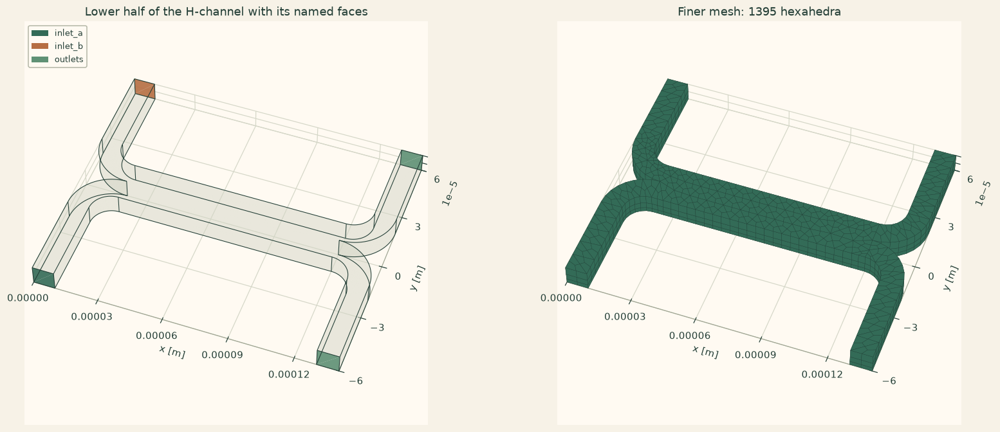

Docs › Examples › Controlled diffusion separator
Microfluidics · 3D
Controlled diffusion separator
An H-shaped microchannel separator at its published operating point: the outlet concentrations for three molecule sizes.

What it computes
Half of the H-shaped channel is read from a STEP file with named faces and meshed with swept hexahedra. OneSimulation solves the 3D flow with Taylor-Hood elements and the steady convection-diffusion of the solute with quadratic elements for three diffusivities. The script that builds the STEP file comes with the notebook.
What it checks
The outlet concentrations deviate from the published values by 0.2 %, 0.3 % and 0.8 % for the three diffusivities, and the inlet pressure is 2.285 Pa against the published 2.29 Pa.
Geometry
The notebook starts at the import of the CAD file controlled_diffusion_separator.step: STEP (AP242), readable by any CAD program, with the names of the faces that the boundary conditions use. Put it next to the notebook.

The geometry script
The script controlled_diffusion_separator_geometry.py builds the geometry with the CAD objects of OneSimulation and writes the file. Change a dimension there, run it, and run the notebook again.
"""Geometry of the OneSimulation example "Controlled diffusion separator".
Builds the lower half of the H-shaped microchannel with the CAD objects of OneSimulation: two inlet
and two outlet arms, 10 µm wide, each joined by a quarter bend to the contact zone, 20 µm wide and
100 µm long; the channel is 20 µm deep, the file holds the 10 µm below the mid-depth plane. Writes
controlled_diffusion_separator.step with the face groups inlet_a, inlet_b, outlet_a, outlet_b,
mid_plane and bottom.
"""
from onesim.cad.d3 import AnnularCylinder, Box, UnionFromObjects
um = 1e-6
width, half_depth, arm, inner, outer, start, end = (
10 * um,
10 * um,
40 * um,
10 * um,
20 * um,
20 * um,
120 * um,
)
parts = [
Box(
length=end - start,
width=2 * width,
height=half_depth,
origin=(start, -width, 0.0),
)
]
for x_bend, x_arm in ((start, start - outer), (end, end + inner)):
for side in (1, -1):
ring = AnnularCylinder(
inner_radius=inner,
outer_radius=outer,
length=half_depth,
origin=(x_bend, side * outer, 0.0),
)
quadrant = Box(
length=outer,
width=outer,
height=half_depth,
origin=(
x_bend - outer if x_bend == start else x_bend,
0.0 if side > 0 else -outer,
0.0,
),
)
parts += [
ring & quadrant,
Box(
length=width,
width=arm,
height=half_depth,
origin=(x_arm, outer if side > 0 else -outer - arm, 0.0),
),
]
channel = UnionFromObjects(objects=parts)
at_end = (
lambda face, x, side: abs(face.center[1] - side * (outer + arm)) < 1e-9
and abs(face.center[0] - x) < 1e-9
)
channel = channel.grouped(
inlet_a=channel.select(
faces=lambda face: at_end(face, start - outer + width / 2, -1)
),
inlet_b=channel.select(
faces=lambda face: at_end(face, start - outer + width / 2, 1)
),
outlet_a=channel.select(
faces=lambda face: at_end(face, end + inner + width / 2, -1)
),
outlet_b=channel.select(
faces=lambda face: at_end(face, end + inner + width / 2, 1)
),
mid_plane=channel.select(
faces=lambda face: face.kind == "plane"
and abs(face.center[2] - half_depth) < 1e-12
),
bottom=channel.select(
faces=lambda face: face.kind == "plane" and abs(face.center[2]) < 1e-12
),
)
channel.save("controlled_diffusion_separator.step")The notebook
The complete notebook, cell by cell. Run it to produce the figures and the comparison printout.
The H-cell (formulated by A. Witarsa and B. A. Finlayson, University of Washington, as a test case for evaluating microfluidic patents; the "H-filter" of J. P. Brody and P. Yager, Sensors and Actuators A 58, 13, 1997) brings two laminar streams into contact for a controlled time. Stream A enters with a solute at \(c_0=1\) mol/m³, stream B with pure water. Both flow side by side through a straight contact zone and are split again. At a Reynolds number of order \(10^{-3}\) the streams do not mix by convection; the solute crosses the interface only by diffusion. A small molecule (large diffusivity \(D\)) leaves through both outlets almost equally, a large molecule stays in stream A.
Every arm is 10 µm wide and 40 µm long and joins the contact zone, 20 µm wide and 100 µm long, through a quarter bend; the channel is 20 µm deep. Each inlet carries 15 pl/s of water. The flow is creeping, followed by the steady convection-diffusion of the dilute solute in that flow:
The lower half of the channel comes from the CAD file controlled_diffusion_separator.step, written by controlled_diffusion_separator_geometry.py with the CAD objects of OneSimulation. The file names the faces:
| face | flow | solute | |---|---|---| | inlet_a | fully developed duct profile, 15 pl/s | \(c=c_0\) | | inlet_b | fully developed duct profile, 15 pl/s | \(c=0\) | | outlet_a, outlet_b | traction free | no diffusive flux | | mid_plane (symmetry at mid-depth) | impermeable, shear free | no flux | | all other faces (walls, with bottom) | no slip | no flux |
Reference. The published outlet-B concentrations of this benchmark: 0.492, 0.448 and 0.235 mol/m³ for \(D=10^{-10}\), \(5\cdot10^{-11}\) and \(10^{-11}\) m²/s.
import numpy as np
from onesim.cad.exchange import load
from onesim.materials import IsotropicSolid, NewtonianFluid
from onesim.meshing import Geometric, SweepMesher
from onesim.numerics import Numerics
from onesim.numerics.fem import FiniteElement, GalerkinAdvection, Lagrange, TaylorHood
from onesim.numerics.linear import SparseDirect
from onesim.numerics.nonlinear import Newton
from onesim.physics.heat_transfer import (
ConvectiveHeatTransfer,
FixedTemperature,
HeatFlux,
)
from onesim.physics.hydrodynamics import (
FixedVelocity,
FlowTraction,
FreeSlipLaw,
IncompressibleNavierStokes,
NoSlipWall,
WallShear,
fully_developed_inflow,
)
from onesim.results.derived import derived_field
from onesim.results.sampling import field_function
from onesim.simulation import Problem, Simulation
from onesim.simulation.initial_conditions import InitialValue
from onesim.visualization import plots, theme
theme.set()Geometry and mesh
load returns the half channel with its named faces. SweepMesher meshes the bottom with quadrilaterals and sweeps them up to the mid-depth plane, with thinner layers at the bottom.
um = 1e-6
channel = load("controlled_diffusion_separator.step")
faces = channel.boundaries
walls = (
faces.all
- faces.inlet_a
- faces.inlet_b
- faces.outlet_a
- faces.outlet_b
- faces.mid_plane
)
meshes = [
SweepMesher(
source=faces.bottom, target_size=size * um, layers=Geometric(layers, ratio=2.0)
).generate(channel)
for size, layers in ((5.0, 2), (4.0, 3))
]
view = plots.Camera(elevation=50, azimuth=-70)
fig = plots.figure(1, 2, size=(15, 6))
plots.geometry(
channel,
selection={
"inlet_a": faces.inlet_a,
"inlet_b": faces.inlet_b,
"outlets": faces.outlet_a | faces.outlet_b,
},
labels=False,
camera=view,
title="Lower half of the H-channel with its named faces",
ax=fig[0],
)
plots.mesh(
meshes[-1],
groups=("all",),
legend=False,
camera=view,
title=f"Finer mesh: {meshes[-1].cell_count} hexahedra",
ax=fig[1],
)
plots.show()Flow
fully_developed_inflow gives the laminar duct profile on each inlet for the mean velocity of 0.075 mm/s. The flow is solved on both meshes.
mean_speed, published = 15e-15 / (10 * um * 20 * um), {
1e-10: 0.492,
5e-11: 0.448,
1e-11: 0.235,
}
flow = IncompressibleNavierStokes(
domain=channel.volume,
material=NewtonianFluid(density=1000.0, dynamic_viscosity=1.0e-3),
)
fields = []
for mesh in meshes:
problem = Problem(
name="Controlled diffusion separator: flow",
geometry=channel,
physics=(flow,),
boundary_conditions=(
FixedVelocity(
boundary=faces.inlet_a,
physics=flow,
value=fully_developed_inflow(
mesh, faces.inlet_a, mean_velocity=mean_speed, no_slip=walls
),
),
FixedVelocity(
boundary=faces.inlet_b,
physics=flow,
value=fully_developed_inflow(
mesh, faces.inlet_b, mean_velocity=mean_speed, no_slip=walls
),
),
FlowTraction(
boundary=faces.outlet_a | faces.outlet_b,
physics=flow,
value=lambda x, y, z: np.zeros((len(x), 3)),
),
NoSlipWall(boundary=walls, physics=flow),
WallShear(boundary=faces.mid_plane, physics=flow, law=FreeSlipLaw()),
),
initial_conditions=(InitialValue(flow.velocity, (0.0, 0.0, 0.0)),),
)
numerics = Numerics(
spatial=FiniteElement(element=TaylorHood()),
initial_guess={flow.velocity: (0.0, 0.0, 0.0)},
nonlinear_solver=Newton(
linear_solver=SparseDirect(),
absolute_tolerance=1e-15,
relative_tolerance=1e-10,
maximum_iterations=10,
),
)
fields.append(
Simulation(problem=problem, mesh=mesh, numerics=numerics).solve_stationary()
)
velocities = [result.field(flow.velocity) for result in fields]
velocity, pressure = velocities[-1], fields[-1].field(flow.pressure)Solute
The dilute solute obeys the same convection-diffusion equation as temperature, with the diffusivity in place of the thermal diffusivity. The three diffusivities are solved on the finer mesh, the smallest one also on the coarser mesh.
cases = [(meshes[-1], velocity, D) for D in published] + [
(meshes[0], velocities[0], 1e-11)
]
concentrations = []
for mesh, carrier, D in cases:
solute = IsotropicSolid(
density=1.0,
specific_heat_capacity=1.0,
thermal_conductivity=D,
youngs_modulus=1.0,
poisson_ratio=0.3,
thermal_expansion_coefficient=0.0,
)
transport = ConvectiveHeatTransfer(
domain=channel.volume, material=solute, velocity=field_function(carrier)
)
problem = Problem(
name="Controlled diffusion separator: solute",
geometry=channel,
physics=(transport,),
boundary_conditions=(
FixedTemperature(physics=transport, boundary=faces.inlet_a, value=1.0),
FixedTemperature(physics=transport, boundary=faces.inlet_b, value=0.0),
HeatFlux(
physics=transport,
boundary=faces.all - faces.inlet_a - faces.inlet_b,
value=0.0,
),
),
)
numerics = Numerics(
spatial=FiniteElement(
element=Lagrange(order=2), convection=GalerkinAdvection()
),
linear_solver=SparseDirect(),
)
concentrations.append(
Simulation(problem=problem, mesh=mesh, numerics=numerics)
.solve_stationary()
.field(transport.temperature)
)Comparison with the published values
The concentration at outlet B is the solute flow divided by the water flow through that face (mixing-cup average).
outlet_b = []
for (mesh, carrier, D), concentration in zip(cases, concentrations):
carried = derived_field(
carrier,
lambda u, points, c=concentration: u[:, 1] * np.ravel(c.evaluate(points)),
name="solute_flux",
unit="mol/m^2/s",
)
outlet_b.append(
carried.integrate(boundary=faces.outlet_b).value
/ carrier.integrate(boundary=faces.outlet_b, normal_component=True).value
)
inlet_pressure = pressure.evaluate([[5 * um, -60 * um + 1e-9, 10 * um - 1e-12]])[0]
print(
f"water through outlet B: {2e15 * velocity.integrate(boundary=faces.outlet_b, normal_component=True).value:.3f} pl/s (inlet 15 pl/s)"
)
print(f"pressure at the inlet: {inlet_pressure:.3f} Pa (published about 2.29 Pa)")
print("diffusivity [m²/s] outlet-B concentration [mol/m³] published deviation")
for D, value in zip(published, outlet_b):
print(
f"{D:18.0e} {value:33.4f} {published[D]:11.3f} {100 * (value / published[D] - 1):+10.1f} %"
)
print(
f"D = 1e-11 m²/s on the coarser mesh ({meshes[0].cell_count} hexahedra): {outlet_b[-1]:.4f} mol/m³, "
f"change to the finer mesh {100 * (outlet_b[2] / outlet_b[-1] - 1):+.1f} %"
)Figure
The speed and the concentration of the largest and the smallest molecule on the mid-depth plane, and the outlet-B concentration against the diffusivity.
fig = plots.figure(2, 2, size=(15, 11))
plots.surface(
velocity,
boundary=faces.mid_plane,
component=lambda u, position: 1e3 * np.linalg.norm(u, axis=1),
contours=4,
subdivisions=3,
aspect=1.0,
label="speed [mm/s]",
title="Speed on the mid-depth plane",
ax=fig[0],
)
for panel, index in ((fig[1], 2), (fig[2], 0)):
plots.surface(
concentrations[index],
boundary=faces.mid_plane,
limits=(0.0, 1.0),
contours=4,
subdivisions=3,
aspect=1.0,
label="concentration [mol/m³]",
ax=panel,
title=f"D = {cases[index][2]:.0e} m²/s: {outlet_b[index]:.3f} mol/m³ at outlet B",
)
plots.line(
points={"simulation": (list(published), outlet_b[:3])},
reference={"published benchmark": (list(published), list(published.values()))},
hlines={"complete mixing": 0.5},
scale="logx",
ylimits=(0.0, 0.55),
xlabel="diffusivity D [m²/s]",
ylabel="concentration at outlet B [mol/m³]",
title="Separation by molecular size",
legend="lower right",
ax=fig[3],
)
plots.show()Going further
Lengthen the contact zone in controlled_diffusion_separator_geometry.py and write the STEP file again: the contact time grows and the large molecule's outlet concentration rises roughly with its square root. Halve the flow rate for the same effect, or feed the B outlet of one separator into the next to enrich the small molecule further.